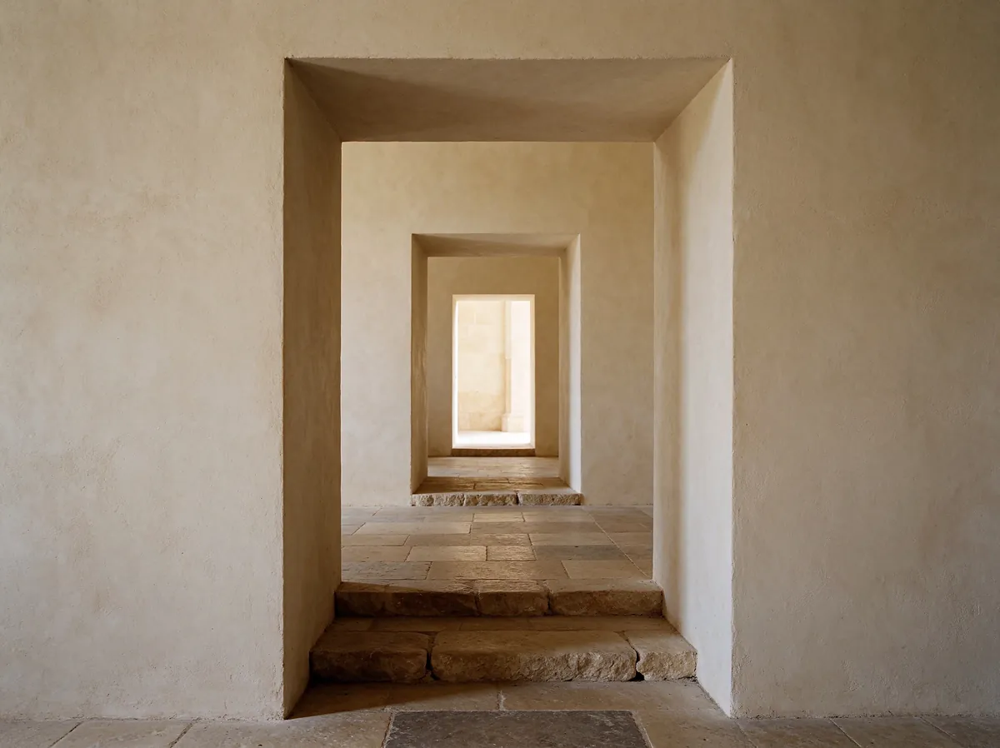

LIMENPsychotherapy · Psychoanalytic Approach — Vivi Katopodi, Psychologist · Psychotherapist
«Όσα δεν μπορούν να ειπωθούν.»
What cannot be said.
Vivi Katopodi · Psychologist · Psychotherapist

LIMEN
Psychoanalytic psychotherapy, in person at the private practice and online.
Psychoanalytic psychotherapy gives room and time to what does not easily find words: to what keeps repeating, to what makes relationships difficult, to what remains unsaid. The work takes place through listening, thinking and the steadiness of a therapeutic frame.
Sessions take place in person at the private practice or online, on a fixed day and time. First contact is made by email or telephone to arrange an initial meeting, in which the request is explored together with whether psychoanalytic psychotherapy is suitable. What is said in therapy is covered by professional confidentiality.
- 01
The approach
The psychoanalytic direction: listening, thought, meaning, relationship, frame. - 02
The therapeutic process
First meeting, frame, frequency, in person and online, confidentiality. - 03
Vivi Katopodi
Training, clinical experience and professional bodies. - 04
Appointments
Email, telephone and a short message.

- Therapist
- Vivi Katopodi, psychologist and psychotherapist, graduate of the Department of Psychology, University of Crete
- Approach
- Psychoanalytic psychotherapy
- Practice
- Private psychotherapy practice since 2002
- Sessions
- In person and online, on a fixed day and time
- First contact
- By email or telephone, for an initial meeting
For a first meeting
Appointments